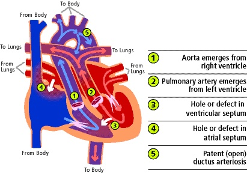

定義與定位
本篇以 d-TGA 為主，也是 TOF 發紺新生兒鑑別中的典型大動脈轉位。l-TGA／congenitally corrected TGA（ccTGA）是不同連接方式，不能直接套用相同的新生兒急救與手術路徑。
| 類型 | 心臟連接 | 循環後果 |
|---|---|---|
| d-TGA | Atrioventricular concordance＋ventriculoarterial discordance：心房接到對的形態心室，心室接到錯的大動脈 | 兩循環平行，依賴混合通道 |
| ccTGA／l-TGA | 房室連接與心室—大動脈連接皆 discordant | 兩次反接可形成串聯循環；形態 RV 常承擔體循環，長期留意 RV／三尖瓣功能與 AV block |
「Congenitally corrected」不表示已接受手術或沒有風險；ccTGA 是否手術取決於合併病變、心室與瓣膜功能。[3]
心臟解剖：血液回到同一個循環

圖 1｜d-TGA 的大血管連接與混合通道。原圖：University of Michigan Health／C.S. Mott Children’s Hospital；取自 OpenAnesthesia 圖 1，原圖未修改。
| 圖中標號 | 對照解剖 | 讀圖重點 |
|---|---|---|
| ① | Aorta（Ao）← right ventricle（RV） | 缺氧血再次送回全身 |
| ② | Pulmonary artery（PA）← left ventricle（LV） | 肺靜脈回來的含氧血再次送回肺 |
| ③ | Ventricular septal defect（VSD） | 心室層級的混合通道；不是所有 d-TGA 都有 |
| ④ | Atrial septal defect（ASD）／patent foramen ovale（PFO） | 心房層級的混合；BAS 要改善的部位 |
| ⑤ | Patent ductus arteriosus（PDA） | 大血管間的通路；PGE₁ 維持其開放 |
病因與機制
主要是胚胎發育時大血管與心室的連接異常，多數個案無單一已知病因。病情嚴重度主要取決於 intercirculatory mixing，以及是否合併 VSD、左心室流出道阻塞或其他解剖異常。[5]
flowchart TD A["全身：低含氧血"] --> B["右心房 RA"] B --> C["右心室 RV"] C --> D["主動脈 Ao"] D --> A E["肺：含氧血"] --> F["左心房 LA"] F --> G["左心室 LV"] G --> H["肺動脈 PA"] H --> E B <-->|"ASD／PFO 混合"| F C <-->|"若有 VSD"| G D <-->|"PDA 通路"| H classDef low fill:#eaf3fc,stroke:#2463a6,color:#16324f classDef high fill:#fff0ed,stroke:#b42318,color:#7a271a class A,B,C,D low class E,F,G,H high
圖 2｜平行循環的功能示意；雙向箭頭代表兩循環之間有交通，不表示每個時間點都等量雙向分流。實際方向受壓力及阻力影響。[4:1]
臨床表現
| 表現 | 判讀 |
|---|---|
| 出生後數小時／數日即發紺 | 混合不足；PDA 關閉可使症狀加重 |
| 呼吸急促、餵食不佳 | 可能合併缺氧、心衰竭或其他病變 |
| 雜音很小或沒有 | 不能排除重症；雜音大小不代表混合效果 |
| Lactate 上升、代謝性酸中毒、末梢灌流差 | 嚴重低氧輸送／休克，需立即升級處理 |
| 較大的混合通道、肺血流多 | 發紺可能較不明顯，但可能逐漸出現肺血流過多與心衰竭 |
臨床表現依混合與合併病變改變，不能把「出生時看起來穩定」當成可延後評估。[1:1]
診斷
| 檢查 | 必須回答的問題 |
|---|---|
| Echocardiography＋Doppler | Ao 是否起自 RV、PA 是否起自 LV；ASD／PFO 是否受限、PDA／VSD、心室功能、流出道／主動脈弓與冠狀動脈解剖 |
| Preductal／postductal SpO₂、血壓與灌流 | 建立缺氧與全身氧輸送的趨勢；不能用單一血氧數值決定所有處置 |
| Arterial blood gas、lactate、glucose | 缺氧後果及穩定治療反應 |
| Chest X-ray／ECG | 可輔助；經典 egg-on-a-string 並非每例出現，不能等待典型影像才處理 |
| CT／導管檢查 | 超音波資訊不足或複雜解剖時補充；導管也可作 BAS，不代表所有病人都需常規診斷性導管 |
產前診斷需注意 outflow-tract views，單看 four-chamber view 可能漏掉大血管連接異常。[2:2][6]
鑑別診斷
| 對象 | 與 d-TGA 的核心差異 |
|---|---|
| TOF | 主要問題是 RVOT 阻塞與右向左分流；主動脈騎跨，不等於 Ao／PA 接反 |
| Pulmonary atresia | RV 至 PA 的正常前向出口不通，先確認替代肺血流及 IVS／VSD 分型 |
| 肺病／persistent pulmonary hypertension of the newborn（PPHN） | 肺部氧合或肺血管阻力問題；仍需 echo 排除結構病，也可與 d-TGA 並存 |
| Total anomalous pulmonary venous return（TAPVR） | 異常在肺靜脈回流；阻塞型也可嚴重發紺與呼吸窘迫 |
治療
| 階段 | 核心方向 |
|---|---|
| 出生後穩定 | 維持灌流與呼吸，PGE₁ 維持 PDA，立即評估各混合通道 |
| 受限 ASD／PFO 且混合不足 | 緊急 BAS 評估；不能只等待 PGE₁ 或氧氣奏效 |
| 典型 d-TGA 根本治療 | 新生兒期 ASO，重建大血管與冠狀動脈連接 |
| 延遲就診／複雜解剖 | 評估 LV 是否能承擔體循環、VSD／流出道／冠脈條件，選擇個別手術路徑 |
術前支持、BAS、ASO、舊式 atrial switch 與複雜型替代術式集中在 TGA correction。
併發症與預後
| 階段／術式 | 需要長期注意 |
|---|---|
| 未矯正／混合不足 | 嚴重缺氧、酸中毒、休克與器官傷害 |
| Arterial switch 後 | 冠狀動脈問題、neo-aortic root／valve 異常、肺動脈吻合處或分支狹窄 |
| Atrial switch 後 | Systemic RV 功能下降、systemic tricuspid regurgitation、baffle 狹窄／漏及心律不整 |
多數接受適當治療者可有良好生活功能，但需終身先天性心臟追蹤。追蹤重點必須先確認病人接受的是哪一種 switch。[5:1]
禁忌與陷阱
相關連結與來源
- TGA correction — 支持治療與手術
- Pediatric heart disease — 兒童心臟疾病索引
- TOF · Pulmonary atresia · Echocardiography
Cincinnati Children’s：Transposition of the Great Arteries，2025-07；症狀、診斷與治療。 ↩︎ ↩︎
EACTS／AEPC：TGA with intact ventricular septum 臨床指引，2017，§3–5；以 TGA/IVS 為適用範圍。 ↩︎ ↩︎ ↩︎
AHA：L-Transposition of the Great Arteries，檢視日期 2026-04-15；ccTGA 與 d-TGA 的區別。 ↩︎
CDC：Dextro-Transposition of the Great Arteries，2026-01-08；解剖、混合與診斷。 ↩︎ ↩︎
AHA：d-Transposition of the Great Arteries，檢視日期 2026-04-15；循環、矯正與追蹤。 ↩︎ ↩︎
OpenAnesthesia：D-Transposition of the Great Arteries；解剖與影像教學，圖 1 原作者為 University of Michigan Health／C.S. Mott Children’s Hospital。 ↩︎